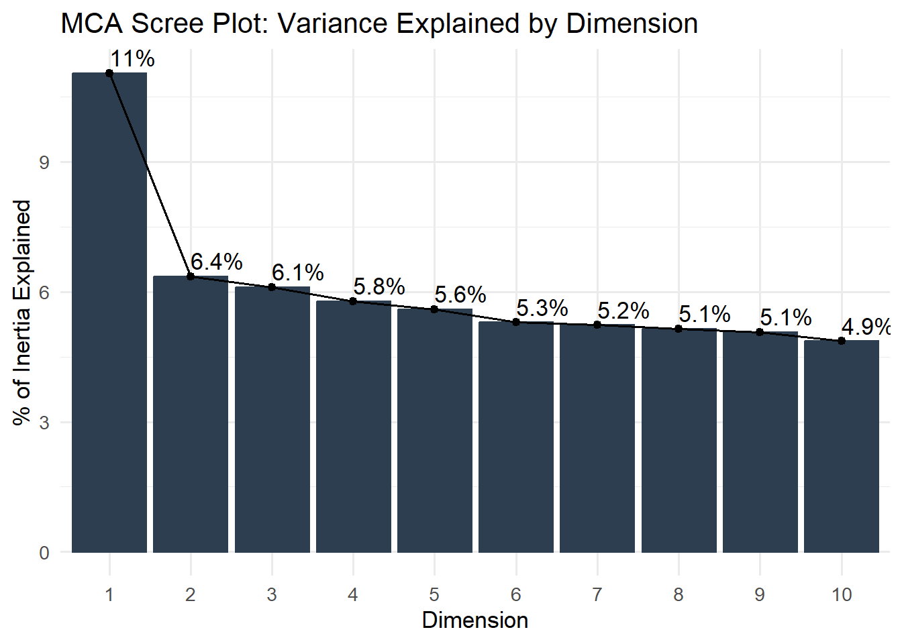
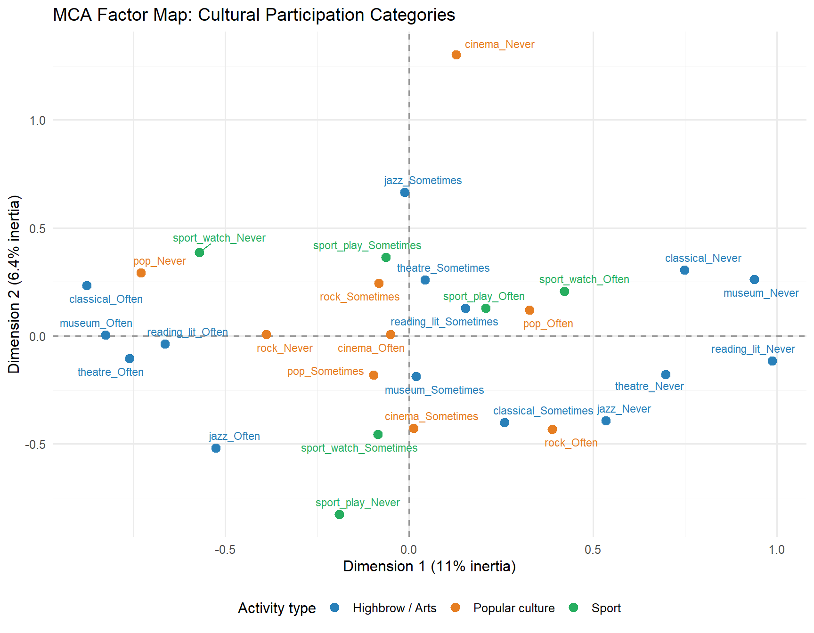
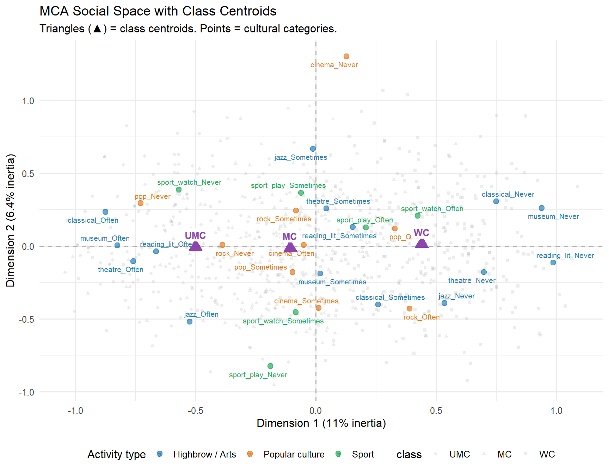
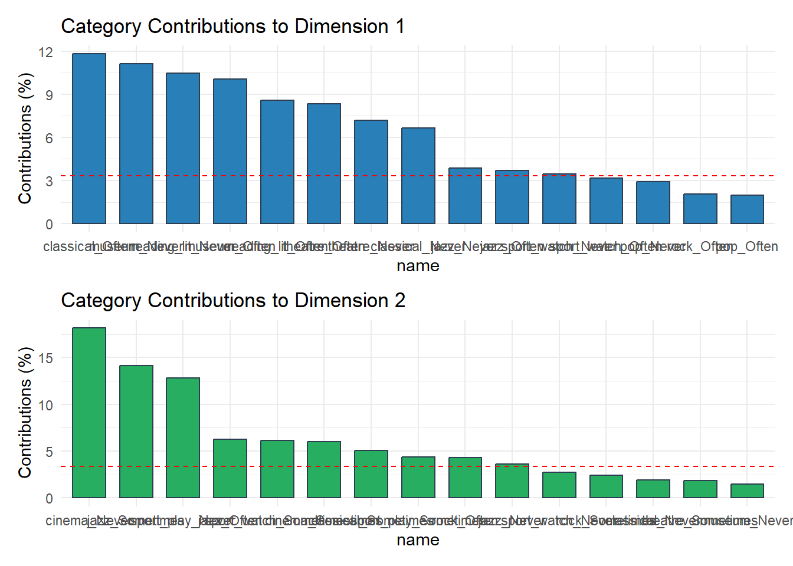

Week 1 Bourdieu: Habitus, Field, Capital, and Multiple Correspondence Analysis
Weeks 3–4 | Theory + Lab 2: MCA
1.1 2.1 Habitus: The Central Concept
Bourdieu defines habitus as a system of durable, transposable dispositions — acquired through lasting exposure to objective conditions, generative of practices and representations that are “regular without being the product of obedience to rules” (Bourdieu, 1990, p. 53).
Three properties are analytically critical:
Durability: Habitus resists change because it is embodied — laid down in the body through repetitive practice, not stored as propositional knowledge. This is why sudden social mobility does not immediately transform taste: the habitus of origin persists as a “hysteresis effect.”
Transposability: Dispositions acquired in one field transfer to others. The ease and manner of speaking acquired in bourgeois domestic life transfers to school performance, which transfers to occupational trajectory. This is the mechanism of cultural reproduction.
Pre-reflective operation: Habitus generates practice without conscious deliberation. It is the “feel for the game” (sens du jeu) — the practical mastery of the rules of a field that is below the level of discourse.
The measurement problem, stated clearly. If habitus operates below the level of conscious deliberation, it cannot be reliably accessed via self-report survey instruments. This is not a minor technical problem — it is a fundamental constraint. Survey-based research on “cultural capital” typically measures institutionalized cultural capital (credentials) or objectified cultural capital (cultural goods consumed), which are observable proxies. Whether these proxies adequately capture embodied cultural capital (dispositions, classificatory schemes) is theoretically contested and rarely empirically tested.
1.2 2.2 Field
A field is a structured space of positions defined by the distribution of capital (economic, cultural, social, symbolic). Fields have:
- Stakes (illusio): the practical investment in the game, the sense that it matters. Entry into a field requires acceptance of the illusio.
- Capital distributions: the structure of the field is its distribution of the relevant capital forms.
- Relative autonomy: fields have their own logic that is not fully reducible to the logic of adjacent fields. The artistic field, e.g., has an “anti-economic” logic (Bourdieu, 1993).
Field analysis in practice means identifying: (1) what are the relevant capital forms? (2) how are they distributed? (3) what are the positions and position-takings? Network methods (especially two-mode networks) and MCA are the primary quantitative tools.
1.3 2.3 Cultural Capital and Distinction
Distinction (Bourdieu, 1984) is the empirical landmark. Using national survey data from France (1963–1967–1968), Bourdieu argues that cultural tastes (for music, art, food, sport, interior design) correspond systematically to social position — and that this correspondence is not incidental but is the mechanism by which class distinctions are made and maintained.
The key empirical finding: cultural practices are structured by two dimensions — cultural capital volume and economic capital volume — which are inversely correlated for some class fractions (professionals vs. business owners). The social space is a two-dimensional space of capital compositions, not a one-dimensional hierarchy.
Bourdieu’s method was essentially MCA, applied to taste items crossed by class position. We replicate this logic in Lab 2.
Normative Case Study: The Great British Class Survey (Savage et al., 2013)
Savage et al. (2013) applied MCA and LCA to a national UK survey of ~160,000 respondents and a nationally representative follow-up (N ≈ 1,026). The study measured three capital forms: economic capital (income, savings, house value), cultural capital (cultural activities, reading, music), and social capital (contact network prestige). MCA produced a social space; LCA on the MCA scores produced seven class categories (including “elite,” “established middle class,” “emergent service workers,” “precariat”). The result challenged the conventional three-class model (upper/middle/working).
This is the methodological template for combining MCA and LCA. We replicate the MCA component below and return to the LCA component in Chapter 4.
Key methodological tension: the study attracted criticism for its sampling strategy (online + snowball) and for the gap between the theoretical definition of the classes and the formal statistical criteria used to assign respondents. Read alongside Chan & Goldthorpe (2007) for a different operationalization of cultural class.
1.4 2.4 The Omnivore-Univore Thesis
Peterson & Kern (1996) reported a shift in US cultural consumption: high-status individuals no longer display “snob” taste (exclusive preference for highbrow genres) but rather omnivorous taste (broad consumption across highbrow and lowbrow genres). This challenges Bourdieu’s homology thesis (that cultural capital is specifically highbrow).
Subsequent research has qualified and partly contested this:
- Chan & Goldthorpe (2007) — UK data distinguish quantity of cultural participation (which is class-stratified) from genre boundary-crossing.
- Warde et al. (2008) — cultural omnivorousness is not social indifference; highbrow genres remain more prestigious.
- Lizardo & Skiles (2012) — the omnivore pattern is predominantly among younger, highly educated cohorts.
The omnivore-univore debate is useful for students because it shows how a single empirical claim becomes contested through (1) replication across national contexts, (2) measurement choices (which genres count as “highbrow”?), and (3) alternative theoretical interpretations of the same pattern.
1.5 Lab 2: Multiple Correspondence Analysis
MCA reduces categorical survey data (e.g., cultural participation items) to a geometric space — analogous to PCA but for categorical variables. It is Bourdieu’s native multivariate method. The output is a “social space” in which individuals and variable categories are positioned according to their profile similarities.
We use a synthetic dataset that mirrors the structure of the ESS cultural participation module. Instructions for loading real ESS data are provided at the end of this section.
1.5.1 2.4.1 Data Construction
library(tidyverse)
library(FactoMineR)
library(factoextra)
library(ggrepel)
library(kableExtra)
set.seed(20240102)
# ─────────────────────────────────────────────────────────────
# Simulate a cultural participation survey (N = 800)
# Variable structure mirrors ESS Round 8 cultural module
# Variables: music (genre preferences), arts visits, sport, reading
#
# We embed class-based taste differences:
# - Upper-middle class (UMC): highbrow music, museum visits, book reading
# - Middle class (MC): mixed tastes, some highbrow
# - Working class (WC): popular music, less arts attendance
# ─────────────────────────────────────────────────────────────
n <- 800
class_probs <- c(UMC = 0.25, MC = 0.40, WC = 0.35)
class <- sample(names(class_probs), n, replace = TRUE, prob = class_probs)
# Helper: generate ordinal item with class-varying probabilities
ord_item <- function(class_vec, probs_umc, probs_mc, probs_wc,
levels = c("Never", "Sometimes", "Often")) {
out <- character(length(class_vec))
out[class_vec == "UMC"] <- sample(levels, sum(class_vec == "UMC"),
replace = TRUE, prob = probs_umc)
out[class_vec == "MC"] <- sample(levels, sum(class_vec == "MC"),
replace = TRUE, prob = probs_mc)
out[class_vec == "WC"] <- sample(levels, sum(class_vec == "WC"),
replace = TRUE, prob = probs_wc)
factor(out, levels = levels, ordered = TRUE)
}
df <- tibble(
id = 1:n,
class = factor(class, levels = c("UMC", "MC", "WC")),
education = case_when(
class == "UMC" ~ sample(c("Tertiary", "Post-grad"), n, replace = TRUE,
prob = c(0.4, 0.6)),
class == "MC" ~ sample(c("Secondary", "Tertiary"), n, replace = TRUE,
prob = c(0.45, 0.55)),
class == "WC" ~ sample(c("Primary", "Secondary"), n, replace = TRUE,
prob = c(0.35, 0.65))
),
# Cultural participation items
classical = ord_item(class, c(.05,.30,.65), c(.15,.45,.40), c(.55,.38,.07)),
jazz = ord_item(class, c(.10,.40,.50), c(.25,.45,.30), c(.50,.35,.15)),
pop = ord_item(class, c(.20,.55,.25), c(.10,.55,.35), c(.05,.40,.55)),
rock = ord_item(class, c(.25,.50,.25), c(.20,.50,.30), c(.15,.45,.40)),
museum = ord_item(class, c(.05,.25,.70), c(.20,.45,.35), c(.55,.35,.10)),
theatre = ord_item(class, c(.10,.30,.60), c(.25,.45,.30), c(.60,.30,.10)),
cinema = ord_item(class, c(.15,.45,.40), c(.10,.45,.45), c(.20,.40,.40)),
reading_lit = ord_item(class, c(.05,.20,.75), c(.15,.40,.45), c(.45,.35,.20)),
sport_watch = ord_item(class, c(.40,.40,.20), c(.20,.40,.40), c(.10,.35,.55)),
sport_play = ord_item(class, c(.25,.45,.30), c(.20,.45,.35), c(.20,.40,.40))
)
# Collapse to binary (Attended vs. Not) for cleaner MCA illustration
binary_items <- df %>%
mutate(across(classical:sport_play, ~ if_else(. == "Never", "No", "Yes")))
cat("Dataset dimensions:", nrow(df), "observations,", ncol(df), "variables\n")## Dataset dimensions: 800 observations, 13 variables## # A tibble: 3 × 13
## id class education classical jazz pop rock museum theatre cinema
## <int> <fct> <chr> <ord> <ord> <ord> <ord> <ord> <ord> <ord>
## 1 1 UMC Tertiary Often Sometimes Often Never Often Often Somet…
## 2 2 MC Tertiary Never Often Often Often Often Often Somet…
## 3 3 MC Tertiary Never Often Sometim… Often Often Someti… Never
## # ℹ 3 more variables: reading_lit <ord>, sport_watch <ord>, sport_play <ord># Frequency tables for key items
participation_rates <- df %>%
dplyr::select(class, classical, museum, reading_lit, sport_watch) %>%
pivot_longer(-class, names_to = "activity", values_to = "freq") %>%
group_by(class, activity, freq) %>%
tally() %>%
mutate(pct = round(n / sum(n) * 100, 1)) %>%
filter(freq == "Often")
participation_rates %>%
dplyr::select(class, activity, pct) %>%
pivot_wider(names_from = activity, values_from = pct) %>%
kable(
caption = "Table 2.1: % 'Often' participating, by class. Note class gradients.",
col.names = c("Class", "Classical music", "Museum visits",
"Literary reading", "Watching sport")
) %>%
kable_styling(bootstrap_options = "striped", font_size = 13)| Class | Classical music | Museum visits | Literary reading | Watching sport |
|---|---|---|---|---|
| UMC | 63.5 | 67.0 | 76.8 | 16.3 |
| MC | 42.7 | 31.9 | 46.1 | 40.0 |
| WC | 6.0 | 10.3 | 17.2 | 53.3 |
1.5.2 2.4.2 Running MCA
# Select only the cultural participation items for MCA
# Class is treated as a SUPPLEMENTARY variable (projected post-hoc)
# This is Bourdieu's logic: the social space is constructed from cultural
# practices, then class is overlaid to check correspondence.
mca_data <- df %>%
dplyr::select(classical, jazz, pop, rock, museum, theatre,
cinema, reading_lit, sport_watch, sport_play) %>%
mutate(across(everything(), as.factor))
# Run MCA
# ncp = number of dimensions to retain
# graph = FALSE (we plot manually)
mca_result <- MCA(mca_data, ncp = 5, graph = FALSE)
# Inertia explained by each dimension
eig <- get_eigenvalue(mca_result)
eig[1:5, ] %>%
kable(
digits = 3,
caption = "Table 2.2: Eigenvalues and variance explained (first 5 dimensions)"
) %>%
kable_styling(bootstrap_options = "striped", font_size = 13)| eigenvalue | variance.percent | cumulative.variance.percent | |
|---|---|---|---|
| Dim.1 | 0.221 | 11.045 | 11.045 |
| Dim.2 | 0.127 | 6.353 | 17.398 |
| Dim.3 | 0.122 | 6.109 | 23.508 |
| Dim.4 | 0.116 | 5.784 | 29.292 |
| Dim.5 | 0.112 | 5.600 | 34.892 |
fviz_screeplot(mca_result, addlabels = TRUE, ncp = 10,
barfill = "#2c3e50", barcolor = "#2c3e50") +
labs(title = "MCA Scree Plot: Variance Explained by Dimension",
x = "Dimension", y = "% of Inertia Explained") +
theme_minimal(base_size = 13)
Figure 1.1: Figure 2.1: Scree plot for MCA. In MCA, eigenvalues are typically small; the first two dimensions usually carry 15–30% of total inertia. This does not imply poor fit — it reflects the nature of categorical data.
1.5.3 2.4.3 Interpreting the Factor Map
# Extract category coordinates
cats <- as.data.frame(mca_result$var$coord[, 1:2])
cats$label <- rownames(cats)
# Color by activity type
cats <- cats %>%
mutate(
activity_type = case_when(
str_detect(label, "classical|jazz|museum|theatre|reading") ~ "Highbrow / Arts",
str_detect(label, "pop|rock|cinema") ~ "Popular culture",
str_detect(label, "sport") ~ "Sport",
TRUE ~ "Other"
)
)
ggplot(cats, aes(x = `Dim 1`, y = `Dim 2`,
color = activity_type, label = label)) +
geom_hline(yintercept = 0, linetype = "dashed", color = "grey60") +
geom_vline(xintercept = 0, linetype = "dashed", color = "grey60") +
geom_point(size = 3) +
geom_text_repel(size = 3, box.padding = 0.4, max.overlaps = 20) +
scale_color_manual(
values = c("Highbrow / Arts" = "#2980b9",
"Popular culture" = "#e67e22",
"Sport" = "#27ae60",
"Other" = "#95a5a6")
) +
labs(
title = "MCA Factor Map: Cultural Participation Categories",
x = paste0("Dimension 1 (", round(eig[1, 2], 1), "% inertia)"),
y = paste0("Dimension 2 (", round(eig[2, 2], 1), "% inertia)"),
color = "Activity type"
) +
theme_minimal(base_size = 12) +
theme(legend.position = "bottom")
Figure 1.2: Figure 2.2: MCA factor map. Each point is a variable category. Categories close together are associated with the same respondent profiles. Dimension 1 (horizontal) distinguishes highbrow from popular culture. Dimension 2 (vertical) contrasts active sport participation from arts attendance.
1.5.4 2.4.4 Projecting Class as a Supplementary Variable
# Add class as supplementary (quali.sup)
mca_supp <- MCA(
mca_data,
ncp = 5,
graph = FALSE,
quali.sup = NULL # will add class manually as supplementary
)
# Compute class centroids in MCA space
ind_coords <- as.data.frame(mca_result$ind$coord[, 1:2])
ind_coords$class <- df$class
class_centroids <- ind_coords %>%
group_by(class) %>%
summarise(Dim1 = mean(`Dim 1`), Dim2 = mean(`Dim 2`))
# Base plot: variable categories
p <- ggplot(cats, aes(x = `Dim 1`, y = `Dim 2`)) +
geom_hline(yintercept = 0, linetype = "dashed", color = "grey70") +
geom_vline(xintercept = 0, linetype = "dashed", color = "grey70") +
geom_point(aes(color = activity_type), size = 2.5, alpha = 0.7) +
geom_text_repel(aes(label = label, color = activity_type),
size = 2.8, box.padding = 0.3, max.overlaps = 15) +
scale_color_manual(
values = c("Highbrow / Arts" = "#2980b9",
"Popular culture" = "#e67e22",
"Sport" = "#27ae60",
"Other" = "#95a5a6"),
name = "Activity type"
)
# Add individual points (light, transparent)
p <- p +
geom_point(data = ind_coords,
aes(x = `Dim 1`, y = `Dim 2`, shape = class),
alpha = 0.12, size = 1.2, color = "grey40") +
# Class centroids
geom_point(data = class_centroids,
aes(x = Dim1, y = Dim2), shape = 17, size = 5,
color = "#8e44ad") +
geom_label(data = class_centroids,
aes(x = Dim1, y = Dim2, label = class),
nudge_y = 0.08, size = 3.5, color = "#8e44ad",
fontface = "bold", fill = "white", label.size = 0) +
labs(
title = "MCA Social Space with Class Centroids",
subtitle = "Triangles (▲) = class centroids. Points = cultural categories.",
x = paste0("Dimension 1 (", round(eig[1, 2], 1), "% inertia)"),
y = paste0("Dimension 2 (", round(eig[2, 2], 1), "% inertia)")
) +
theme_minimal(base_size = 12) +
theme(legend.position = "bottom")## Warning: The `label.size` argument of `geom_label()` is deprecated as of ggplot2 3.5.0.
## ℹ Please use the `linewidth` argument instead.
## This warning is displayed once per session.
## Call `lifecycle::last_lifecycle_warnings()` to see where this warning was
## generated.
Figure 1.3: Figure 2.3: MCA factor map with class centroids overlaid as supplementary points (triangles). Supplementary variables do not participate in construction of the axes — they are projected post-hoc. This is Bourdieu’s method: the cultural space is constructed from practices, then class is shown to structure that space.
1.5.5 2.4.5 Variable Contributions and Cos²
# Contributions to Dimension 1
contrib_d1 <- fviz_contrib(mca_result, choice = "var", axes = 1, top = 15,
fill = "#2980b9", color = "#2c3e50") +
labs(title = "Category Contributions to Dimension 1") +
theme_minimal(base_size = 11)
# Contributions to Dimension 2
contrib_d2 <- fviz_contrib(mca_result, choice = "var", axes = 2, top = 15,
fill = "#27ae60", color = "#2c3e50") +
labs(title = "Category Contributions to Dimension 2") +
theme_minimal(base_size = 11)
library(patchwork)
contrib_d1 / contrib_d2
Figure 1.4: Figure 2.4: Contribution of each category to Dimensions 1 and 2. Categories contributing more than the average (red line) are the primary structuring elements of that dimension.
# cos² = quality of representation on each dimension
# Low cos² = category is poorly represented in this 2D solution
cos2_tab <- as.data.frame(mca_result$var$cos2[, 1:2])
cos2_tab$category <- rownames(cos2_tab)
cos2_tab <- cos2_tab %>%
mutate(total_cos2 = `Dim 1` + `Dim 2`) %>%
arrange(desc(total_cos2)) %>%
dplyr::select(category, `Dim 1`, `Dim 2`, total_cos2)
cos2_tab %>%
head(12) %>%
kable(
digits = 3,
caption = "Table 2.3: Cos² values for top 12 categories (quality of representation in 2D space). Categories with low total cos² are poorly captured by the first two dimensions."
) %>%
kable_styling(bootstrap_options = "striped", font_size = 12)| category | Dim 1 | Dim 2 | total_cos2 | |
|---|---|---|---|---|
| classical_Often | classical_Often | 0.397 | 0.028 | 0.425 |
| museum_Never | museum_Never | 0.341 | 0.026 | 0.367 |
| reading_lit_Often | reading_lit_Often | 0.333 | 0.001 | 0.334 |
| museum_Often | museum_Often | 0.330 | 0.000 | 0.330 |
| reading_lit_Never | reading_lit_Never | 0.303 | 0.004 | 0.308 |
| jazz_Sometimes | jazz_Sometimes | 0.000 | 0.303 | 0.303 |
| theatre_Often | theatre_Often | 0.272 | 0.005 | 0.277 |
| cinema_Never | cinema_Never | 0.003 | 0.267 | 0.270 |
| theatre_Never | theatre_Never | 0.236 | 0.015 | 0.251 |
| classical_Never | classical_Never | 0.199 | 0.033 | 0.232 |
| jazz_Often | jazz_Often | 0.115 | 0.113 | 0.228 |
| sport_play_Never | sport_play_Never | 0.011 | 0.214 | 0.225 |
1.5.6 2.4.6 Loading Real ESS Data
# ─────────────────────────────────────────────────────────────
# To run MCA on real ESS Round 10 data:
# 1. Download from https://europeansocialsurvey.org/data/round10.html
# (SPSS format recommended)
# 2. Place the .sav file in data/ESS10.sav
# ─────────────────────────────────────────────────────────────
library(haven)
library(labelled)
ess_raw <- read_sav("data/ESS10.sav")
# ESS cultural participation variables (Round 8, module D)
# Variable names vary by round — check codebook
ess_culture <- ess_raw %>%
select(
cntry,
atchctr, # Attachment to country
ppltrst, # Trust in people (used as outcome later)
# Cultural participation block
wrclmch, # Worked for a cultural or arts organisation
clsprty, # Close to a political party
# Taste items — Round 8 supplement
# (Round 10 uses different module; adjust accordingly)
eduyrs, # Years of education
hinctnta # Household income decile
) %>%
# Convert to unabelled
mutate(across(everything(), as_factor)) %>%
drop_na()
# Then run MCA as above
mca_ess <- MCA(ess_culture %>% select(-cntry, -eduyrs, -hinctnta),
ncp = 5, graph = FALSE,
quali.sup = which(names(ess_culture) %in% c("eduyrs", "hinctnta")) - 2)Assignment 2 — Data Exploration (Due Week 6)
Using either the ESS (Round 10), the GSS (2018 or 2022), or the WVS (Wave 7), identify a set of cultural participation, taste, or value items (minimum 8 items) and:
- Produce descriptive statistics showing class / education gradients
- Run MCA on your selected items
- Interpret the first two dimensions with theoretical justification
- Project at least one supplementary variable (class, education, income)
- Discuss one finding that is consistent with Bourdieu’s model and one that is inconsistent or ambiguous
Length: 2,500–3,500 words + R code appendix.
Format: R Markdown, rendered.
Core Readings
- Bourdieu, P. (1984). Distinction: A Social Critique of the Judgement of Taste. Harvard University Press. Introduction + Part I.
- Bourdieu, P. (1986). The Forms of Capital. In J. Richardson (Ed.), Handbook of Theory and Research for the Sociology of Education. Greenwood.
- Bourdieu, P., & Wacquant, L. (1992). An Invitation to Reflexive Sociology. University of Chicago Press. Chapters 1–2.
- Lamont, M. (1992). Money, Morals, and Manners. University of Chicago Press. Chapters 1–3.
- Peterson, R. A., & Kern, R. M. (1996). Changing Highbrow Taste: From Snob to Omnivore. American Sociological Review, 61(5), 900–907.
- Savage, M., et al. (2013). A New Model of Social Class. Sociology, 47(2), 219–250.
- Chan, T. W., & Goldthorpe, J. H. (2007). Class and Status: The Conceptual Distinction and its Empirical Relevance. American Sociological Review, 72(4), 512–532.
## R version 4.5.3 (2026-03-11 ucrt)
## Platform: x86_64-w64-mingw32/x64
## Running under: Windows 11 x64 (build 26200)
##
## Matrix products: default
## LAPACK version 3.12.1
##
## locale:
## [1] LC_COLLATE=English_Israel.utf8 LC_CTYPE=English_Israel.utf8
## [3] LC_MONETARY=English_Israel.utf8 LC_NUMERIC=C
## [5] LC_TIME=English_Israel.utf8
##
## time zone: Asia/Jerusalem
## tzcode source: internal
##
## attached base packages:
## [1] stats graphics grDevices utils datasets methods base
##
## other attached packages:
## [1] patchwork_1.3.2 factoextra_2.0.0 FactoMineR_2.13 ggrepel_0.9.8
## [5] kableExtra_1.4.0 lubridate_1.9.5 forcats_1.0.1 stringr_1.6.0
## [9] dplyr_1.2.0 purrr_1.2.1 readr_2.2.0 tidyr_1.3.2
## [13] tibble_3.3.1 ggplot2_4.0.2 tidyverse_2.0.0 rmarkdown_2.31
##
## loaded via a namespace (and not attached):
## [1] tidyselect_1.2.1 viridisLite_0.4.3 farver_2.1.2
## [4] S7_0.2.1 fastmap_1.2.0 TH.data_1.1-5
## [7] promises_1.5.0 digest_0.6.39 estimability_1.5.1
## [10] timechange_0.4.0 mime_0.13 lifecycle_1.0.5
## [13] cluster_2.1.8.2 multcompView_0.1-11 survival_3.8-6
## [16] magrittr_2.0.4 compiler_4.5.3 rlang_1.1.7
## [19] sass_0.4.10 tools_4.5.3 utf8_1.2.6
## [22] yaml_2.3.12 knitr_1.51 ggsignif_0.6.4
## [25] labeling_0.4.3 htmlwidgets_1.6.4 scatterplot3d_0.3-45
## [28] xml2_1.5.2 RColorBrewer_1.1-3 abind_1.4-8
## [31] multcomp_1.4-30 miniUI_0.1.2 withr_3.0.2
## [34] grid_4.5.3 ggpubr_0.6.3 xtable_1.8-8
## [37] ClaudeR_0.2.0 emmeans_2.0.2 scales_1.4.0
## [40] MASS_7.3-65 flashClust_1.1-4 cli_3.6.5
## [43] mvtnorm_1.3-6 generics_0.1.4 otel_0.2.0
## [46] rstudioapi_0.18.0 tzdb_0.5.0 cachem_1.1.0
## [49] splines_4.5.3 base64enc_0.1-6 vctrs_0.7.2
## [52] Matrix_1.7-4 sandwich_3.1-1 carData_3.0-6
## [55] jsonlite_2.0.0 car_3.1-5 bookdown_0.46
## [58] hms_1.1.4 rstatix_0.7.3 Formula_1.2-5
## [61] systemfonts_1.3.2 jquerylib_0.1.4 glue_1.8.0
## [64] codetools_0.2-20 DT_0.34.0 stringi_1.8.7
## [67] gtable_0.3.6 later_1.4.8 pillar_1.11.1
## [70] htmltools_0.5.9 R6_2.6.1 textshaping_1.0.5
## [73] evaluate_1.0.5 shiny_1.13.0 lattice_0.22-9
## [76] backports_1.5.0 leaps_3.2 broom_1.0.12
## [79] httpuv_1.6.17 bslib_0.10.0 Rcpp_1.1.1
## [82] svglite_2.2.2 coda_0.19-4.1 xfun_0.57
## [85] zoo_1.8-15 pkgconfig_2.0.3